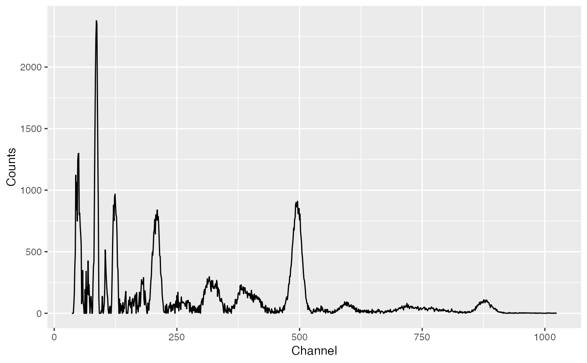
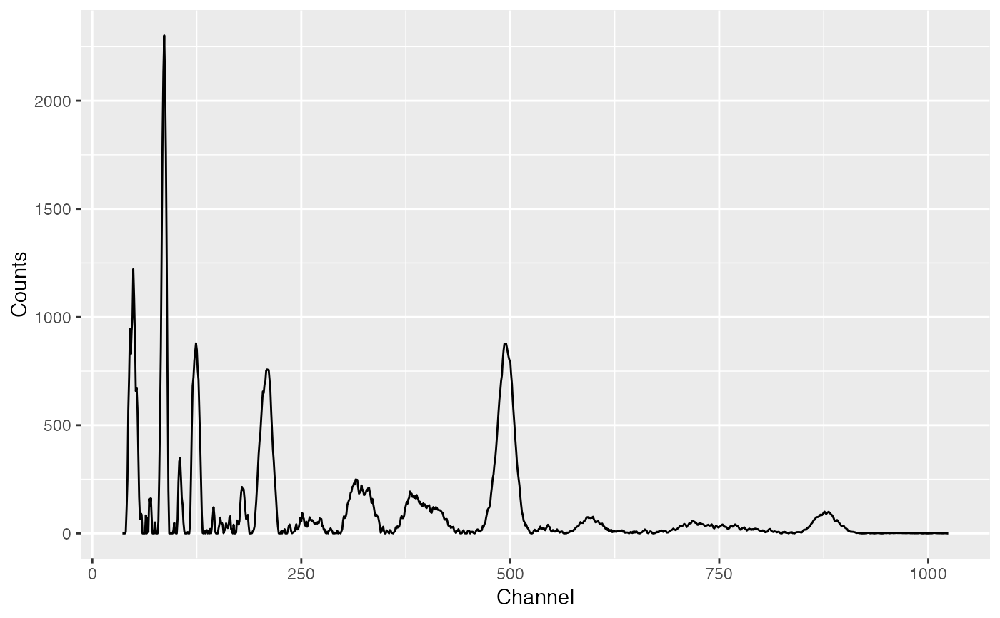
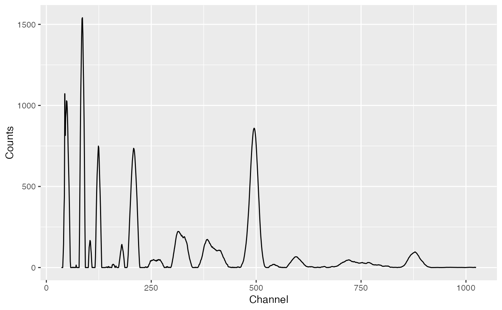

Smoothes a spectrum.
smooth(object, ...) # S4 method for GammaSpectra smooth(object, method = c("unweighted", "weighted", "savitzky"), m = 3, p = 2) # S4 method for GammaSpectrum smooth(object, method = c("unweighted", "weighted", "savitzky"), m = 3, p = 2)
Arguments
| object | A GammaSpectrum or GammaSpectra object. |
|---|---|
| ... | Currently not used. |
| method | A |
| m | An odd |
| p | An |
Value
A GammaSpectrum or GammaSpectra object.
Details
The following smoothing methods are available:
- unweighted
Unweighted sliding-average or rectangular smooth. It replaces each point in the signal with the average of \(m\) adjacent points.
- weighted
Weighted sliding-average or triangular smooth. It replaces each point in the signal with the weighted mean of \(m\) adjacent points.
- savitzky
Savitzky-Golay filter. This method is based on the least-squares fitting of polynomials to segments of \(m\) adjacent points.
There will be \((m - 1) / 2\) points both at the beginning and at the end
of the spectrum for which a complete \(m\)-width smooth cannot be
calculated. To prevent data loss, progressively smaller smooths are used at
the ends of the spectrum if method is unweighted or
weighted. If the Savitzky-Golay filter is used, the original
\((m - 1) / 2\) points at the ends of the spectrum are preserved.
References
Gorry, P. A. (1990). General Least-Squares Smoothing and Differentiation by the Convolution (Savitzky-Golay) Method. Analytical Chemistry, 62(6), p. 570-573. DOI: 10.1021/ac00205a007.
Savitzky, A. and Golay, M. J. E. (1964). Smoothing and Differentiation of Data by Simplified Least Squares Procedures. Analytical Chemistry, 36(8), p. 1627-1639. DOI: 10.1021/ac60214a047.
See also
Other signal processing: integrateSignal,
peaks, processBaseline,
stabilize
Examples
library(magrittr)#> #>#> #> #># Import CNF files spc_file <- system.file("extdata/test_CNF.cnf", package = "gamma") spectrum <- read(spc_file, skip = TRUE) # Plot spectrum spectrum %>% removeBaseline() %>% plot()# Rectangular smooth spectrum %>% smooth(method = "unweighted", m = 3) %>% removeBaseline() %>% plot()# Savitzky–Golay spectrum %>% smooth(method = "savitzky", m = 5, p = 2) %>% removeBaseline() %>% plot()